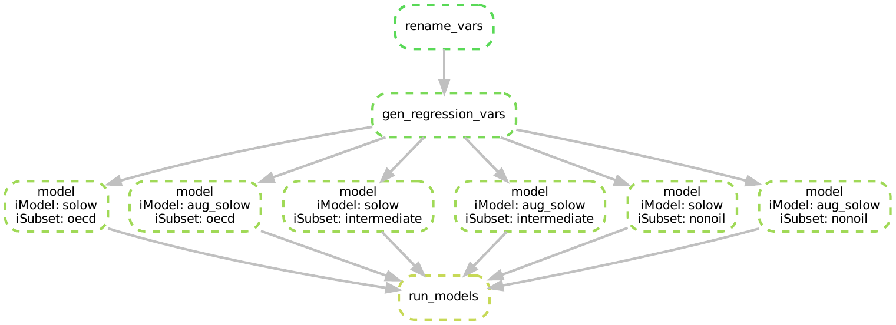

Chapter 7 Wildcards in Target Rules
Overview
Questions
- How can we use wildcards to simplify target rules?
- How do we make the build plan explicit in target rules?
- How do we combine more than one wildcard in a single target rule?
Objectives
- Introduce wildcards to target rules
- Explain what the
expand()function is and how to ues it - Learn how to use multiple wildcards in a single rule
Snakefile Status
After the last chapter our Snakefile should look like this:
# --- Target Rules --- #
rule solow_target:
input:
intermediate = "out/analysis/model_solow_subset_intermediate.rds",
nonoil = "out/analysis/model_solow_subset_nonoil.rds",
oecd = "out/analysis/model_solow_subset_oecd.rds"
# --- Build Rules --- #
rule solow_model:
input:
script = "src/analysis/estimate_ols_model.R",
data = "out/data/mrw_complete.csv",
model = "src/model-specs/model_solow.json",
subset = "src/data-specs/subset_{iSubset}.json"
output:
estimate = "out/analysis/model_solow_subset_{iSubset}.rds"
shell:
"Rscript {input.script} \
--data {input.data} \
--model {input.model} \
--subset {input.subset} \
--out {output.estimate}"
rule gen_regression_vars:
input:
script = "src/data-management/gen_reg_vars.R",
data = "out/data/mrw_renamed.csv",
param = "src/data-specs/param_solow.json"
output:
data = "out/data/mrw_complete.csv"
shell:
"Rscript {input.script} \
--data {input.data} \
--param {input.param} \
--out {output.data}"
rule rename_vars:
input:
script = "src/data-management/rename_variables.R",
data = "src/data/mrw.dta"
output:
data = "out/data/mrw_renamed.csv"
shell:
"Rscript {input.script} \
--data {input.data} \
--out {output.data}"
# --- Clean Rules --- #
rule clean:
shell:
"rm -rf out/*"
rule clean_data:
shell:
"rm -rf out/data/*"
rule clean_analysis:
shell:
"rm -rf out/analysis/*"This will be our starting point for this chapter.
In the last chapter we have learned how to use wildcards to eliminate unnecessary repetitions in our code.
Next, we will learn how to apply wildcards to our target rules with help of the expand() function.
7.1 The expand() function
When we look at our target rule:
rule solow_target:
input:
intermediate = "out/analysis/model_solow_subset_intermediate.rds",
nonoil = "out/analysis/model_solow_subset_nonoil.rds",
oecd = "out/analysis/model_solow_subset_oecd.rds"We can see that the inputs have a very similar structure:
- The inputs live on the same path
out/analysis/ - The filenames of each input begin with
model_solow_subsetand end with.rds.
They only differ in the name of the subset of data we are using: intermediate, nonoil, and oecd.
After what we learned in the previous chapter on wildcards, we should be thinking that there must be a way to reduce the repetition.
Let’s try simply adding a wildcard for the varying part of the input files.
We can do this by condensing the three inputs in solow_target into one as follows:
rule solow_target:
input:
models = "out/analysis/model_solow_subset_{iSubset}.rds",
To see if this has any bite, and would work as we intuitively think it might we will want to run Snakemake. Before we do, let’s clean the output folder and start afresh:
$ snakemake --cores 1 cleanThen, we run our new target rule with the wildcard we added:
$ snakemake --cores 1 solow_targetThis didn’t do as we intuitively had hoped. Instead we get the following error:
Building DAG of jobs...
WildcardError in line 12 of /home/lachlan/teaching/snakemake-econ-r-learner/Snakefile:
Wildcards in input files cannot be determined from output files:
'iSubset'Recall that Snakemake won’t run a target rule that contains a wildcard because it does not know how to resolve it.9
Snakemake doesn’t know that {iSubset} should first be replaced with oecd, then with intermediate, and finally with nonoil.
It is our job to be a bit more explicit and tell Snakemake that this is what we want to happen.
Snakemake has a functionality that allows us to tell it how to take a wildcard and replace it with a specific set of values.
The expand() function provides this for us.
As the name suggests its job is to expand a wildcard by replacing it iteratively with specified values.
We can use the expand() function as follows:
rule solow_target:
input:
expand("out/analysis/model_solow_subset_{iSubset}.rds",
iSubset = DATA_SUBSET)This tells Snakemake to replace the wildcard {iSubset} with values from an object we have called DATA_SUBSET.
We now have to replace DATA_SUBSET with a list of values that we want to substitute in for{iSubset}.
7.2 Using expand() with a List
In Python and Snakemake lists can be thought of as a container that store many values.
We create a list by putting the values we want inside square brackets and separating the values with commas.
In our case, a list of the three subsets of the data looks like this: ["nonoil", "oecd", "intermediate"].
Let us replace DATA_SUBSET with our new list of subset names:
rule solow_target:
input:
expand("out/analysis/model_solow_subset_{iSubset}.rds",
iSubset = ["nonoil", "oecd", "intermediate"])We use the --summary option of Snakemake to see the build plan:
$ snakemake --summaryoutput_file date rule version log-file(s) status plan
out/analysis/model_solow_subset_nonoil.rds - solow_model - missing update pending
out/analysis/model_solow_subset_oecd.rds - solow_model - missing update pending
out/analysis/model_solow_subset_intermediate.rds - solow_model - missing update pending
out/data/mrw_complete.csv - gen_regression_vars - missing update pending
out/data/mrw_renamed.csv - rename_vars - missing update pendingThe first three lines show us that Snakemake plans to build the three files out/analysis/model_solow_subset_nonoil.rds, out/analysis/model_solow_subset_oecd.rds, out/analysis/model_solow_subset_intermediate.rds from our original target rule.
This means Snakemake has indeed replaced the wildcard iSubset with the correct three values just like we wanted.10
We have successfully simplified our target rule.
Adding Python 3 Code Outside of Snakemake Rules
Snakemake accepts any Python 3 code outside of rules. You can add Python 3 lists or functions anywhere in a Snakefile. You can then use the these lists or functions in the Snakemake rules as needed.
So far, we defined the list passed to the expand function at the time we needed it, inside the call to expand function. While this makes explicit what values we want the expand function to iterate through, it might be better practice to define the list outside of it. What this would mean is to create a list somewhere else in our Snakefile, and then tell Snakemake to use this pre-defined list inside the expand function.
Let us see this idea in action.
We will create our list of data subsets at the beginning of our Snakefile and then reference it in the rule solow_target.
Create a list called DATA_SUBSET at the beginning of the Snakefile as follows:11
DATA_SUBSET = ["oecd", "intermediate", "nonoil"]We then need to refer to the list by name inside our expand() function.
To do so, we replace the explicit list we had before with the name of our newly constructed DATA_SUBSET list:
rule solow_target:
input:
expand("out/analysis/model_solow_subset_{iSubset}.rds",
iSubset = DATA_SUBSET)Now us execute our rule:
$ snakemake --cores 1 The last part of the output from the Snakemake rule is:
TODO: Add OutputNice, everything seems to have worked. If we look into our output folder, we should now see the three output models:
ls out/analysismodel_solow_subset_nonoil.rds
model_solow_subset_oecd.rds
model_solow_subset_intermediate.rds Why might we have advocated for creating lists outside of the expand function? There are at least the following three reasons you might want to do so:
- If we want to re-use the same list of values in another rule, we would have to write the list again or copy and paste it into the second rule. As before, this introduces extra room for errors.
- It can be hard to find the lists we are iterating over when we read through the Snakefile.
Putting all lists we are using at the top of
Snakefilemakes this easier. - In the next chapter we will introduce a new function which allows us to construct lists which we pass to
expand()from the files in our project automatically. For this task it will be very advantageous to define lists outside of rules.
Exercise: Exploring the expand function
Mankiw, Romer, and Weil (1992) contains three plots.
Each of these plots use the data subset of ‘intermediate’ countries.
The src/figures/ subdirectory contains three scripts which correspond to the three plots in the paper.12
It is your task to use what you have learned so far to create a workflow to produce the figures. To do so, follow the following steps:
- Write three rules
fig1,fig2andfig3to produce each figure. Each figure should be saved to the following output filepathout/figures/SCRIPTNAME.pdf - Create a list called
PLOTSthat contains the file names of each of the three plot scripts (without the path or the.jsonfile ending). - Use what you have learned about wildcards to simplify the three rules
fig1,fig2, andfig3into a single rule calledfigures. What part of the rule needs a wildcard? - Use the
expand()function to create a target rule namedmake_figures. - Use the summary function to check that all three figures are planned to be created correctly.
- Create all three figures with a single execution of
snakemake --cores 1 figs_target. - Make sure that the files have been written to the output folder.
HINT: The scripts are written in such a way that they accept exactly the same options. Check first, what inputs the scripts expect.
SOLUTION:
In this problem the three rules fig1, fig2, and fig3 only differ in the {input.model} they take and the output filename. We therefore have use wildcards in both to unify them.
The target rule make_figures then uses the expand() function and a list of the filenames without the .json ending to create all three plots.
After completing all steps. your Snakefile should look something like this:
# --- Dictionaries --- #
DATA_SUBSET = ["oecd",
"intermediate",
"nonoil"
]
PLOTS = [
"aug_conditional_convergence",
"conditional_convergence",
"unconditional_convergence"
]
# --- Target Rules --- #
rule make_figures:
input:
expand("out/figures/{iFigure}.pdf",
iFigure = PLOTS)
rule solow_target:
input:
expand("out/analysis/model_solow_subset_{iSubset}.rds",
iSubset = DATA_SUBSET)
# --- Build Rules --- #
rule figures:
input:
script = "src/figures/{iFigure}.R",
data = "out/data/mrw_complete.csv",
subset = "src/data-specs/subset_intermediate.json"
output:
fig = "out/figures/{iFigure}.pdf"
shell:
"Rscript {input.script} \
--data {input.data} \
--subset {input.subset} \
--out {output.fig}"
rule solow_model:
input:
script = "src/analysis/estimate_ols_model.R",
data = "out/data/mrw_complete.csv",
model = "src/model-specs/model_solow.json",
subset = "src/data-specs/{iSubset}.json"
output:
estimate = "out/analysis/model_solow_{iSubset}.rds"
shell:
"Rscript {input.script} \
--data {input.data} \
--model {input.model} \
--subset {input.subset} \
--out {output.estimate}"
rule gen_regression_vars:
input:
script = "src/data-management/gen_reg_vars.R",
data = "out/data/mrw_renamed.csv",
param = "src/data-specs/param_solow.json"
output:
data = "out/data/mrw_complete.csv"
shell:
"Rscript {input.script} \
--data {input.data} \
--param {input.param} \
--out {output.data}"
rule rename_vars:
input:
script = "src/data-management/rename_variables.R",
data = "src/data/mrw.dta"
output:
data = "out/data/mrw_renamed.csv"
shell:
"Rscript {input.script} \
--data {input.data} \
--out {output.data}"
# --- Clean Rules --- #
rule clean:
shell:
"rm -rf out/*"
rule clean_data:
shell:
"rm -rf out/data/*"
rule clean_analysis:
shell:
"rm -rf out/analysis/*"You can check the summary via
run the rule via
and check the output via
7.3 Estimating a New Model
So far we have estimated the basic Solow model.
Mankiw, Romer, and Weil (1992) also estimate an augmented version of the Solow model which adds human capital.
You can find the regression model required to estimate the augmented model in src/model-specs/model_aug_solow.json.
We can estimate this regression model across each of the three data sets by creating two new rules:
aug_solow_model- a rule that specifies how to estimate the regression model- This should be conceptually very similar ot the
solow_modelrule
- This should be conceptually very similar ot the
aug_solow_target- a target rule, using theexpand()function to estimate the augmented solow model across the datasets specified in DATA_SUBSET.- This will look very similar to the
solow_targetrule.
- This will look very similar to the
Let’s first create the aug_solow_model rule:
rule aug_solow_model:
input:
script = "src/analysis/estimate_ols_model.R",
data = "out/data/mrw_complete.csv",
model = "src/model-specs/model_aug_solow.json",
subset = "src/data-specs/subset_{iSubset}.json"
output:
estimate = "out/analysis/model_aug_solow_subset_{iSubset}.rds"
shell:
"Rscript {input.script} \
--data {input.data} \
--model {input.model} \
--subset {input.subset} \
--out {output.estimate}"And then the aug_solow_target:
rule aug_solow_target:
input:
expand("out/analysis/model_aug_solow_subset_{iSubset}.rds",
iSubset = DATA_SUBSET)Finally, we can estimate the new regression model by executing the aug_solow_target rule with Snakemake:
snakemake --cores 1 aug_solow_target7.4 Expanding Multiple Wildcards
The rules used to estimate the standard Solow model and the augmented Solow model are identical except for the model they use.
The only difference between the aug_solow_target and solow_target rules is that the filename differs by three letters: out/analysis/model_aug_solow_{iSubset}.rds versus
out/analysis/model_solow_{iSubset}.rds.
rule solow_target:
input:
expand("out/analysis/model_solow_subset_{iSubset}.rds",
iSubset = DATA_SUBSET)
rule aug_solow_target:
input:
expand("out/analysis/model_aug_solow_subset_{iSubset}.rds",
iSubset = DATA_SUBSET)
And, when we look at aug_solow_model and compare it to solow_model we again see only small differences:
the model changes from model_aug_solow.json to model_solow.json and the outputs change in a similar way.
rule solow_model:
input:
script = "src/analysis/estimate_ols_model.R",
data = "out/data/mrw_complete.csv",
model = "src/model-specs/model_solow.json",
subset = "src/data-specs/subset_{iSubset}.json"
output:
estimate = "out/analysis/model_solow_subset_{iSubset}.rds"
shell:
"Rscript {input.script} \
--data {input.data} \
--model {input.model} \
--subset {input.subset} \
--out {output.estimate}"
rule aug_solow_model:
input:
script = "src/analysis/estimate_ols_model.R",
data = "out/data/mrw_complete.csv",
model = "src/model-specs/model_aug_solow.json",
subset = "src/data-specs/subset_{iSubset}.json"
output:
estimate = "out/analysis/model_aug_solow_subset_{iSubset}.rds"
shell:
"Rscript {input.script} \
--data {input.data} \
--model {input.model} \
--subset {input.subset} \
--out {output.estimate}"We want to exploit this similarity and condense these four rules into two:
- a rule that estimates the model, named
model, and - a target rule that will run each specification, named
run_models.
Let’s do this in reverse order, i.e. starting with creating the run_models target rule.
7.4.1 Unifying the Target Rules
First, we are going to take our two rules aug_solow_target and solow_target and replace them with one rule.
To do this, we remove the existing rules and replace them with the following:
rule run_models:
input:
expand("out/analysis/model_{iModel}_subset_{iSubset}.rds",
iSubset = DATA_SUBSET,
iModel = MODELS)What this says is run_models wants to create regression estimates for multiple datasets, by iterating through our existing list DATA_SUBSET and
replacing {iSubset} with each of these values one after the other.
Furthermore, it wants to create regression estimates across multiple models, by iterating through a list called MODELS and replacing {iModel} with each of these values successively.
Combined, that means run_models will create regression estimates for each of the pairwise combinations of elements in the DATA_SUBSET and MODELS lists.
We have not specified the list MODELS yet, so let’s do that now.
MODELS contains two elements, solow and aug_solow - which are the names of the models we estimate.
Let’s add this to the top of our Snakefile:
MODELS = [
"solow",
"aug_solow"
]7.4.2 Unifying How Regression Outputs are Built
The rule run_models tells Snakemake what we want to produce.
Now we have to dictate how these estimates can be produced - i.e. how to we combine data, regression models and R scripts to produce the outputs.
We are going to replace the two rules solow_model and aug_solow_model with one rule model that can estimate both regression models.
To do this, we generalize these existing rules.
The {input.model} is what needs generalization - instead of taking the value model_solow.json OR model_aug_solow.json it will take a wildcard value model_{iModel}.json.
This should give us the following:13
rule model:
input:
script = "src/analysis/estimate_ols_model.R",
data = "out/data/mrw_complete.csv",
model = "src/model-specs/model_{iModel}.json",
subset = "src/data-specs/subset_{iSubset}.json"
output:
estimate = "out/analysis/model_{iModel}_subset_{iSubset}.rds"
shell:
"Rscript {input.script} \
--data {input.data} \
--model {input.model} \
--subset {input.subset} \
--out {output.estimate}"Now the rule model can estimate an OLS model using different regression specification by substituting a value into {iModel}, and across different data sets by substituting a value into {iSubset}.
The target rule we created above, tells Snakemake which values to substitute.
7.4.3 Running the New Rule
To see this new rule in action, let’s start by cleaning our output folder to start fresh:
Before running Snakemake let’s look at the summary information from Snakemake:
$ snakemake --summarywhich yields:
output_file date rule version log-file(s) status plan
out/analysis/model_solow_subset_oecd.rds - - - - missing update pending
out/analysis/model_aug_solow_subset_oecd.rds - - - - missing update pending
out/analysis/model_solow_subset_intermediate.rds - - - - missing update pending
out/analysis/model_aug_solow_subset_intermediate.rds - - - - missing update pending
out/analysis/model_solow_subset_nonoil.rds - - - - missing update pending
out/analysis/model_aug_solow_subset_nonoil.rds - - - - missing update pending
out/data/mrw_complete.csv - gen_regression_vars - missing update pending
out/data/mrw_renamed.csv - rename_vars - missing update pendingThis confirms that our new target and model rules work. Snakemake plans to do the data management steps and build all six model outputs afterwards.
Let’s now execute our target rule:
$ snakemake --cores 1 run_modelsNotice how the figures aren’t produced automatically.
Do you remember why?
If not, revisit the previous chapter.
You can build them with snakemake --cores 1 make_figures
7.5 Our Workflow in Graphs
We’ve make some good progess in this chapter using expand() to reduce replication in our Snakefile.
The Snakemake rule graph which shows the rules we execute in our workflow is now:

This says to run the rule run_models - Snakemake expands wildcards and builds the regression outputs using the models rule.
Before the models are run, the data cleaning steps are completed in order.
We can get an even more insightful perspective on what Snakemake is doing under the hood by looking at the DAG:

The DAG makes even clearer what our workflow is doing:
- Snakemake wants to build the inputs listed in
run_models - It can build those inputs by running the
modelrule six times when it iterates over the wildcards - To run each model, it needs the clean data, so it needs to run the two data cleaning steps first
Notice that the rule graph and DAG don’t show us how the figures are created.
This is because the rule that generates figures, make_figures is not the first rule in the Snakefile.
For the sake of completeness, the rulegraph for how figures are made is:

And the DAG is:

We leave it to the interested reader to provide themselves a verbal understanding of what these graphs mean in terms of workflow execution.
B References
Mankiw, N. Gregory, David Romer, and David N. Weil. 1992. “A Contribution to the Empirics of Economic Growth*.” The Quarterly Journal of Economics 107 (2): 407–37. https://doi.org/10.2307/2118477.
If this doesn’t feel like a familar argument to you, review the material from the previous chapter here.↩︎
Note that the
--summarycommand did not throw an error message. This means we have solved theWildcardErrorwe began with.↩︎We capitalize lists that we iterate over to separate them from other parts of code. This is not essential but makes life a bit easier sometimes. Whenever you see a capitalized name, you know it is a list that we want to iterate over.↩︎
This is not entirely true, we are yet to figure out how to get the y-axis range from the original paper.↩︎
Instead of typing out this new rule
modelsand deletingsolow_modelandaug_solow_model, you could delete the ruleaug_solow_modeland modify thesolow_ruleso that it looks like this.↩︎